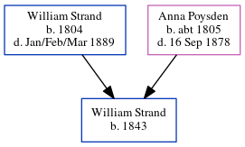

William Strand 1843 -
[ Home ] | [ Calendar ] | [ Surnames Index ] | [ Census Index ] | [ Family History ]The child of William Strand (an agricultural laborer) and Anna Poysden, William Strand, the first cousin four-times-removed on the father's side of Nigel Horne, was born in Chislet, Kent, England in 18431,2. On Mar 30, 1851, he was living in Upstreet, Kent, England1.
Parents
- William was born in 1804
- Anna Maria was born c. 1805
Citations
- 1851 England, Wales & Scotland Census - Findmypast (was age 9 and the son of the head of the household)
- England Births & Baptisms 1538-1975 - Findmypast
Media
England Births & Baptisms 1538-1975 - R_884111556
Family Tree
Generated by ged2site. Last updated on Jun 11, 2024